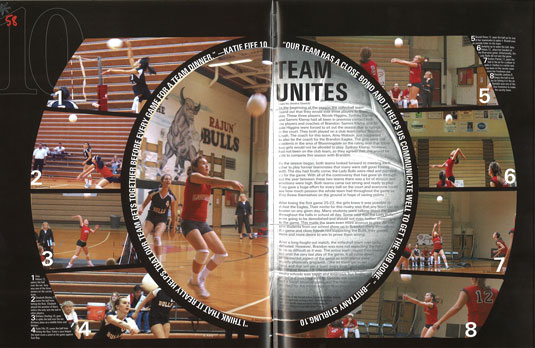
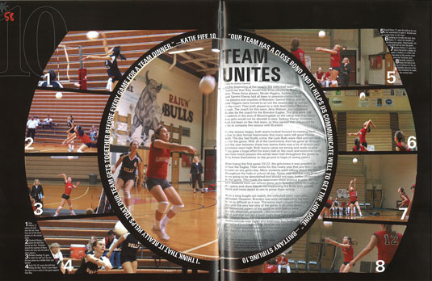
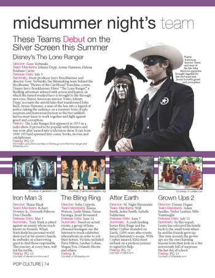
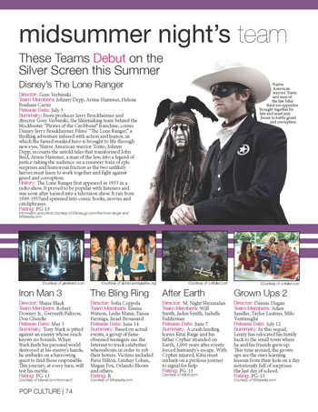

ABOUT
My name is Sarah Brand and I am a senior journalism major at the University of Florida. Although I am a journalism major, I have more passion for design than writing, and hope to have a career as a graphic designer or visual journalist.
I decided to make the jump from a writer to a designer a few years back. In high school I was the editor-in-chief of our yearbook, and after taking a design elective at UF I rediscovered designing and found that I truly loved it.
The past two years I have devoted my time to learning graphic and web design principles, and how to implement those principles successfully. My ultimate goals are to be a successful front-end developer, web design and visual communicator.

 

 
